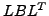

Fast nonlinear programming methods following the all-at-once approach usually employ Newton's method for solving linearized Karush-Kuhn-Tucker (KKT) systems. In nonconvex problems, the Newton direction is only guaranteed to be a descent direction if the Hessian of the Lagrange function is positive definite on the nullspace of the active constraints, otherwise some modifications to Newton's method are necessary. This condition can be verified using the signs of the KKT's eigenvalues (inertia), which are usually available from direct solvers for the arising linear saddle point problems. Iterative solvers are mandatory for very large-scale problems, but in general do not provide the inertia. Here we present a preconditioner based on a multilevel incomplete  factorization, from which an approximation of the inertia can be obtained [1]. The suitability of the heuristics for application in optimization methods is verified on an interior point method applied to the CUTE and COPS test problems, on large-scale 3D PDE-constrained optimal control problems, as well as 3D PDE-constrained optimization in biomedical cancer hyperthermia treatment planning. The efficiency of the preconditioner is demonstrated on very large-scale convex and nonconvex problems with millions of state and control variables, both subject to bound constraints.
We propose an inertia revealing preconditioning approach for the solution of nonconvex PDE-constrained optimization problems. If interior methods with second-derivative information are used for these optimization problems, a linearized Karush-Kuhn-Tucker system of the optimality conditions has to be solved. The main issue addressed is how to ensure that the Hessian is positive definite in the null-space of the constraints while neither adversely affecting the convergence of Newton's method or incurring a significant computational overhead. In the nonconvex case, it is of interest to find out the inertia of the current iteration system so that the matrix may be modified a posteriori to obtain convergence to a minimum. However, in order to not destroy the rapid convergence rate of the interior method, the modification has only be performed in the cases where the inertia is not correct and factorization methods are very often used in order to compute the inertia information [2]. However, in this work we propose a new inertia revealing preconditioned Krylov iteration to solve the linearized Karush-Kuhn-Tucker system of optimality conditions.
For general nonconvex nonlinear programming problems it is therefore of utmost importance to modify the method in such a way that no ascent steps are taken and finally to check that the delivered solution is indeed a local minimum. For both tasks it is necessary to compute the inertia of the Karush-Kuhn-Tucker system of the optimality conditions, which is relatively easy using direct factorization methods. For very large scale problems, in particular discretized 3D partial differential equations, direct factorizations are prohibitively expensive both in terms of computing time and storage requirements. How to reliably obtain the inertia from iterative methods, however, is essentially an open problem.
We propose an algebraic multilevel preconditioning technique using maximum weighted matchings [3,4] for revealing the inertia to be used in a interior point method [2]. Our preconditioning approaches for the symmetric indefinite Karush-Kuhn-Tucker systems are based on maximum weighted matchings and algebraic multi-level inverse-based incomplete factorizations [5]. We present numerical results on several large-scale three-dimensional examples of PDE-constrained optimizations in the full space of states, control and adjoint variables with equality and non-equality constraints and test them with artificial as well as clinical data from biomedical cancer hyperthermia treatment planning. The largest nonconvex optimization problem from three-dimensional PDE-constrained optimization with the inertia revealing preconditioning approach has more than 30 million state variables and hundred of thousands million control variables with both lower and upper bound.
[1] O. SCHENK, A. W¨ACHTER, AND M. WEISER, Inertia revealing preconditioning for large-scale nonconvex constrained optimization, Technical Report CS-2007-12 (2007), Computer Science Department, University of Basel, Switzerland, submitted.
[2] A. W¨ACHTER AND L. T. BIEGLER, On the implementation of a primal-dual interior point filter line search algorithm for large-scale nonlinear programming, Mathematical Programming, 106 (2006), pp. 25-57.
[3] I. S. DUFF AND S. PRALET, Strategies for scaling and pivoting for sparse symmetric indefinite problems, SIAM J. Matrix Analysis and Applications, 27 (2005), pp. 313-340.
[4] O. SCHENK AND K. G¨ARTNER, On fast factorization pivoting methods for symmetric indefinite systems, Elec. Trans. Numer. Anal., 23 (2006), pp. 158-179.
[5] O. SCHENK, M. BOLLHÖFER, AND R. A. R¨OMER, On large scale diagonalization techniques for the Anderson model of localization, SIAM Review, (2008).